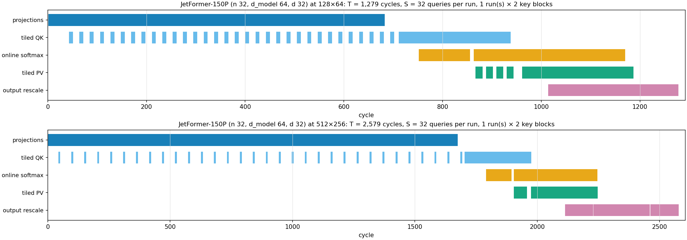
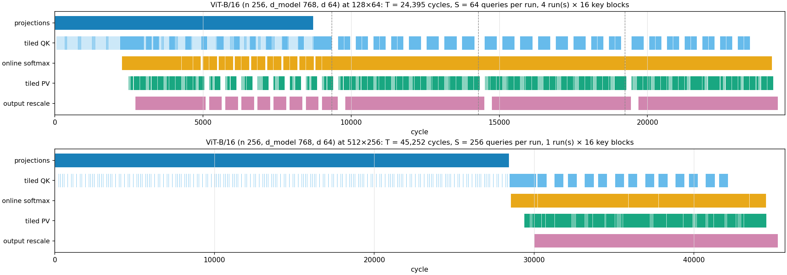
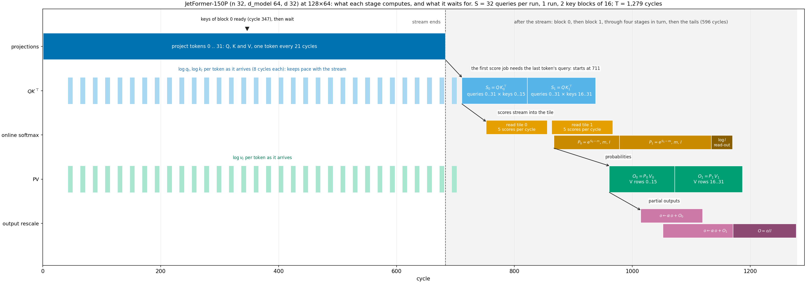
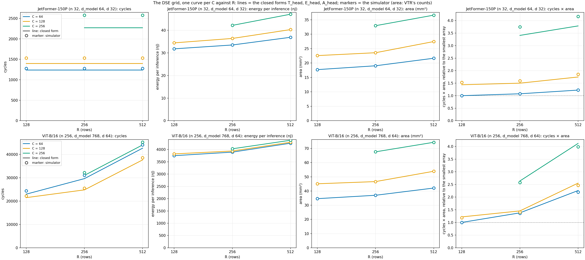

v3 DSE · stage analysis · 2026-10-19 · 8 configs, crossbar tiles 2026-10-22
Two heads, the smallest and the largest of the DSE: JetFormer-150P (n 32, dmodel 64, d 32) and ViT-B/16 (n 256, dmodel 768, d 64); two arrays, 128 × 64 and 512 × 256; the DSE's fixed mapping. Numbers from the simulator; the closed forms below are checked against it on all 8 arrays (JetFormer-150P within 12 %, ViT-B/16 within 6 % on cycles, 0.1 %, 0.0 % on energy).



The projections stream the tokens; tiled QK, the online softmax, tiled PV and the output rescale form one pipeline behind them, working in runs of S = min(n, I) queries and blocks of 16 keys. A run's QK can start once its S queries are projected, so short runs (small I) start early and overlap the stream; a run of S = n waits for every token.
A bigger array stretches the stream and lengthens the runs (ViT-B/16: 34 → 111 cycles per token; 4 runs → one, no overlap). The pipeline's work is the same on every array.
The farms (QK and PV) are 80–91 % of the energy; the projections and the softmax are the critical path.
Crossbars / passes per stage
| stage | 128 × 64 | 512 × 256 |
|---|---|---|
| projections | 3 / 96 | 3 / 96 |
| tiled QK | 66 / 576 | 66 / 192 |
| online softmax | 4 / 19 | 4 / 7 |
| tiled PV | 65 / 544 | 65 / 160 |
| output rescale | 8 / 64 | 8 / 16 |
| head | 146 / 1,299 | 146 / 471 |
Energy per stage (share of the head)
| stage | 128 × 64 | 512 × 256 |
|---|---|---|
| projections | 1 nJ (5 %) | 7 nJ (15 %) |
| tiled QK | 14 nJ (45 %) | 20 nJ (43 %) |
| online softmax | 1 nJ (3 %) | 1 nJ (2 %) |
| tiled PV | 14 nJ (43 %) | 17 nJ (37 %) |
| output rescale | 1 nJ (5 %) | 2 nJ (4 %) |
| head | 32 nJ | 47 nJ |
Cycles on the critical path per stage (share of T)
| stage | 128 × 64 | 512 × 256 |
|---|---|---|
| projections | 675 (53 %) | 1,667 (65 %) |
| tiled QK | 185 (14 %) | 121 (5 %) |
| online softmax | 276 (22 %) | 116 (4 %) |
| tiled PV | 0 (0 %) | 155 (6 %) |
| output rescale | 141 (11 %) | 518 (20 %) |
| head | 1,279 | 2,579 |
Crossbars / passes per stage
| stage | 128 × 64 | 512 × 256 |
|---|---|---|
| projections | 18 / 4,608 | 6 / 1,536 |
| tiled QK | 130 / 66,048 | 130 / 16,896 |
| online softmax | 4 / 1,148 | 4 / 287 |
| tiled PV | 129 / 65,792 | 129 / 16,640 |
| output rescale | 16 / 8,192 | 12 / 2,048 |
| head | 297 / 145,788 | 281 / 37,407 |
Energy per stage (share of the head)
| stage | 128 × 64 | 512 × 256 |
|---|---|---|
| projections | 98 nJ (3 %) | 131 nJ (3 %) |
| tiled QK | 1,727 nJ (46 %) | 2,013 nJ (46 %) |
| online softmax | 50 nJ (1 %) | 55 nJ (1 %) |
| tiled PV | 1,687 nJ (45 %) | 1,959 nJ (45 %) |
| output rescale | 188 nJ (5 %) | 220 nJ (5 %) |
| head | 3,751 nJ | 4,378 nJ |
Cycles on the critical path per stage (share of T)
| stage | 128 × 64 | 512 × 256 |
|---|---|---|
| projections | 8,710 (36 %) | 28,420 (63 %) |
| tiled QK | 87 (0 %) | 134 (0 %) |
| online softmax | 10,480 (43 %) | 11,299 (25 %) |
| tiled PV | 4,851 (20 %) | 4,403 (10 %) |
| output rescale | 265 (1 %) | 994 (2 %) |
| head | 24,395 | 45,252 |
1. Symbols and the two primitives
2. Cycles per stage (one key block of \(S \times B_{kv}\) scores, on the stage's own crossbars)
3. Latency
4. Energy per stage (pJ; \(e_{add} = 0.085\), \(e_{compare} = 0.264\), \(e_{memory} = 0.0495\) per 5 bytes)
5. Area per stage (\(A_{tile}(R, C)\) = the tile's grid cells × 66,117 MWTA × 0.033864 µm²; the row-parallel tile of experiment.md §5.1: 6 cells at 128 × 64, 36 at 512 × 256)
6. Our mapping
| R × C | T simulator | Thead | error | Tprojection_stream | Tblock | bound | E simulator (nJ) | Ehead | error | A VTR (mm²) | Ahead |
|---|---|---|---|---|---|---|---|---|---|---|---|
| 128 × 64 | 1,279 | 1,239 | -3 % | 672 | 147 | core | 32 | 32 | -0.1 % | 17.7 | 17.7 |
| 128 × 128 | 1,532 | 1,396 | -9 % | 864 | 136 | core | 34 | 34 | -0.1 % | 22.6 | 22.6 |
| 256 × 64 | 1,279 | 1,239 | -3 % | 672 | 147 | core | 34 | 34 | -0.1 % | 19.1 | 19.1 |
| 256 × 128 | 1,532 | 1,396 | -9 % | 864 | 136 | core | 36 | 36 | -0.1 % | 23.6 | 23.6 |
| 256 × 256 | 2,579 | 2,270 | -12 % | 1,696 | 150 | core | 42 | 42 | -0.1 % | 33.0 | 33.0 |
| 512 × 64 | 1,279 | 1,239 | -3 % | 672 | 147 | core | 37 | 37 | -0.1 % | 21.7 | 21.7 |
| 512 × 128 | 1,532 | 1,396 | -9 % | 864 | 136 | core | 40 | 40 | -0.1 % | 27.5 | 27.5 |
| 512 × 256 | 2,579 | 2,270 | -12 % | 1,696 | 150 | core | 47 | 47 | -0.1 % | 36.6 | 36.6 |
| R × C | T simulator | Thead | error | Tprojection_stream | Tblock | bound | E simulator (nJ) | Ehead | error | A VTR (mm²) | Ahead |
|---|---|---|---|---|---|---|---|---|---|---|---|
| 128 × 64 | 24,395 | 22,999 | -6 % | 8,704 | 273 | stream | 3,751 | 3,750 | -0.0 % | 34.6 | 34.6 |
| 128 × 128 | 22,204 | 21,503 | -3 % | 8,704 | 493 | core | 3,823 | 3,822 | -0.0 % | 45.1 | 45.1 |
| 256 × 64 | 31,050 | 29,654 | -4 % | 15,360 | 273 | stream | 3,895 | 3,895 | -0.0 % | 37.0 | 37.0 |
| 256 × 128 | 25,549 | 24,830 | -3 % | 15,360 | 493 | core | 3,940 | 3,939 | -0.0 % | 46.6 | 46.6 |
| 256 × 256 | 32,197 | 31,052 | -4 % | 15,360 | 870 | core | 4,031 | 4,030 | -0.0 % | 67.6 | 67.6 |
| 512 × 64 | 44,105 | 42,709 | -3 % | 28,416 | 273 | stream | 4,258 | 4,258 | -0.0 % | 42.1 | 42.1 |
| 512 × 128 | 38,604 | 37,677 | -2 % | 28,416 | 493 | stream | 4,298 | 4,297 | -0.0 % | 53.9 | 53.9 |
| 512 × 256 | 45,252 | 44,107 | -3 % | 28,416 | 870 | core | 4,378 | 4,377 | -0.0 % | 74.3 | 74.3 |

Data v3/dse/results/stages/stages.json (dse/stage_analysis.py), figures dse/plot_stages.py, page dse/stages_page.py, write-up v3/docs/attention_stages.md. BUF 40, P 8, Bkv 16.